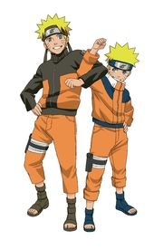
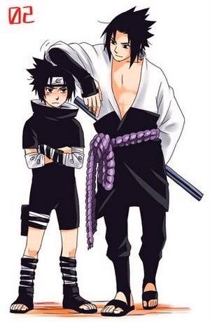
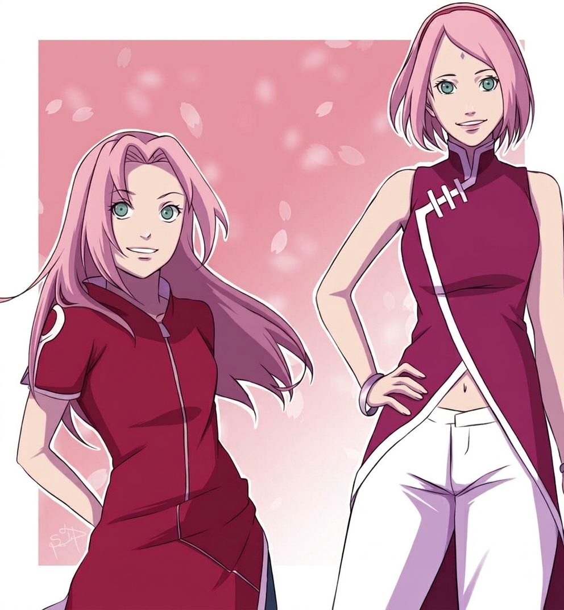

O Time 7 original de Konoha é liderado por Kakashi Hatake e formado por Naruto Uzumaki, Sasuke Uchiha e Sakura Haruno. No início, o grupo enfrenta grandes rivalidades internas e dilemas pessoais. No entanto, eles superam missões perigosas juntos, como o arco do País das Ondas. O laço do trio se rompe quando Sasuke abandona a vila em busca de poder para se vingar de seu irmão Itachi, deixando uma ferida profunda em Naruto e Sakura.
Anos mais tarde, durante a Quarta Grande Guerra Ninja, o Time 7 se reúne novamente com a ajuda temporária de Sai e do capitão Yamato. Mais maduros e poderosos, Naruto, Sasuke e Sakura unem forças para derrotar ameaças colossais e salvar o mundo shinobi. Após a guerra, Naruto e Sasuke travam um último duelo épico no Vale do Fim, reconciliando-se e consolidando o legado eterno da equipe.


